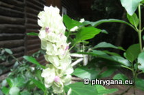

")
| Phrygana: la Nature en Crète principalement, mais aussi d'ailleurs ... |
|  |
|
|
| Justicia betonica | Hypoestes phyllostachya | Saltator atriceps |
| Espèces: 1359--- Faune: 540 -- Flora: 794 -- Galles (Bacteria): 2 -- Champignons: 22 -- Lichens: 1 | |||||
| Nouveautés | |||||
| Flora: | Jacaranda mimosifolia | Flora: | Arachis pintoi | Fauna: | Haliaeetus leucogaster |
| Flora: | Clerodendrum speciosissimum | Fauna: | Butorides striata | Fauna: | Heliconius charithonia |
| Flora: | Petrea volubilis | Flora: | Couroupita guianensis | Flora: | Calliandra haematocephala |
| 30 mars 2023 |